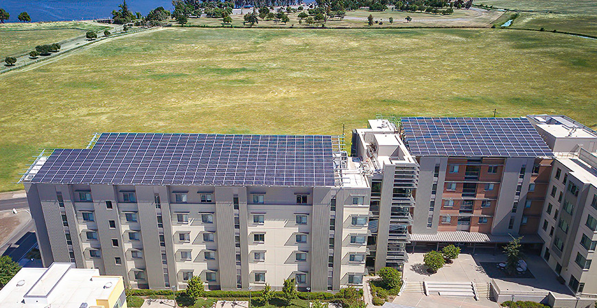

Campus Reaches Carbon Neutrality Ahead of Schedule
December 3, 2020
By Lorena Anderson, UC Merced
Solar panels atop campus buildings are just one factor in the campus's carbon neutrality.
After a lengthy and rigorous review by independent auditors, UC Merced can proudly announce it is the first public research university in the country to achieve carbon neutrality, two years ahead of its goal.
“UC Merced has been on the cutting edge of sustainability in higher education since its inception. We are proud of our many achievements in reducing our impact on the environment, and this recognition of our carbon neutrality stands among the most meaningful we have yet received,” Chancellor Juan Sánchez Muñoz said.
The campus also made the Green College Honor Roll by The Princeton Review, and ranked No. 5 in the Sierra Club Cool Schools listings.
The campus actually achieved carbon neutrality in 2018, seven years before former UC President Janet Napolitano’s initiative goal to have all 10 campuses carbon neutral by 2025. However, the emissions verification and validation take time. UC Merced retained a third-party verifier to review and audit the campus inventories of greenhouse gas emissions specifically from onsite fossil fuel combustion and purchased electricity.
“This was a voluntary step we took, and usually take, to ensure accuracy and transparency,” said Breeana Sylvas, assistant director of the Office of Sustainability. “We wanted to ensure we reflected the full spectrum of our campus emissions profile.”
The inventory results are reported to The Climate Registry (TCR), which conducts its own review. TCR is a nonprofit organization with a mission of empowering its members to reduce their carbon footprints. It does not certify organizations as carbon neutral, but rather works with member organizations to measure, report and verify their carbon footprints.
“I’m very proud that our university has achieved carbon-neutral campus operations and hope we can be an inspiration for others across the state and nation,” said Distinguished Professor Roger Bales, a member of the UC Global Climate Leadership Council. “The current carbon neutrality announcement is an important milestone in our long journey to create a just, sustainable future.”
Video by Media Cats
Since its founding, UC Merced has set stringent sustainability goals, including zero net greenhouse gas emissions by 2020. The campus is green from the ground up, with every campus building LEED certified by the U.S. Green Building Council.
In addition to the wealth of sustainability and climate-related research projects across all three schools, carbon neutrality has been a campuswide effort, with faculty, staff and students engaged in climate action planning. Contributing programs include faculty integrating sustainable practices in their labs, students analyzing building operations and energy use, and student research on carbon offsets and carbon sequestration. The campus has integrated engagement programs as an opportunity for students to learn about sustainability measures on campus and to carry the culture of sustainability out into the wider world.
“Supporting the campus carbon neutrality goal has been rewarding,” said Carlin Coleman, a graduating senior studying environmental engineering, who works in the Office of Sustainability. “Often, people don't recognize the small measures that can reduce impacts on the environment. It makes me proud to know that my actions are directly affecting our campus goal.”
The entire campus took part in campaigns such as the UC Cool Campus Challenge, and staff members have participated in the Green Offices Program, engaging daily in practices that have helped.
Other efforts include prioritizing student-led programs to reduce greenhouse gas impacts in buildings, developing high-performance buildings, installing renewable energy generation onsite, making clean power purchases and using carbon offsets.
“Our priority is to align operational goals with the mission of the university, student learning and research,” Sylvas said. “This includes reducing energy use, identifying and utilizing clean and renewable sources for onsite combustion, and mitigating remaining emissions generated through gas with offsets.”
Even as the Merced 2020 Project doubled the size of campus and added 13 new buildings over the past three years, UC Merced has been able to keep its energy use-intensity relatively level, she said. While the construction of each building meets high standards, the campus has modeled building efficiency within the state.
“Past revisions of the energy code for the state of California were updated because of advancements made by UC Merced,” Director of Sustainability Mark Maxwell said. “Specifically, lighting control methods designed into buildings, which included multiple controlled lighting systems, occupancy sensors, and lighting control management systems.” The campus is looking to eliminate fossil fuel combustion in future capital developments, he said.
Besides its own goals and the UC-wide carbon neutrality initiative, UC Merced is also a signatory of the Second Nature Carbon Commitment, an extension of the Presidents’ Climate Leadership Commitments. Second Nature is a non-governmental organization committed to accelerating climate action in, and through, higher education, and recognizes schools that have achieved carbon neutrality.
“Congratulations to UC Merced on this major accomplishment,” Second Nature President Tim Carter said. “Achieving carbon neutrality for higher education institutions is not an easy undertaking. It requires tremendous commitment and continuous work on the campus and within their community to do so. To do so earlier than their goal neutrality date illustrates just how committed UC Merced is.”
Taken all together, UC Merced’s commitment to sustainability has had a positive effect on the campus community and the region, as well. You can learn more about the campus's carbon neutrality efforts and successes online.
“We have a dynamic, robust program that is engaging and utilizing multiple avenues that have achieved and are maintaining our goal, and we thank our incredible campus community members, all of whom are making a difference. We are just getting started,” Sylvas said. “This is just the beginning.”